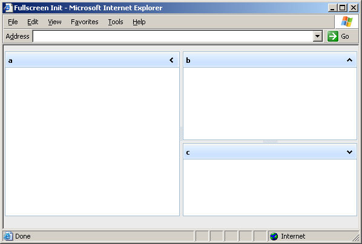

Margins in Layout
dhtmlxLayout 2.5 supports margins, which can be usefull in fullscreened init, for adding logo in header, company info in footer.
By the default fullscreened layout have the following margins (2px from each side):
dhxLayout.cont.obj._offsetTop = 2; // top margin dhxLayout.cont.obj._offsetLeft = 2; // left margin dhxLayout.cont.obj._offsetHeight = -4; // bottom margin dhxLayout.cont.obj._offsetWidth = -4; // right margin
To create fullscreened layout with your custom margins you should do the following:
1. Apply style for correct layout positioning:
html, body { width: 100%; height: 100%; margin: 0px; padding: 0px; overflow: hidden; }
2. Init dhtmlxLayout:
var dhxLayout = new dhtmlXLayoutObject(document.body, "3L");
3. Set margins (for example top and bottoms margins, also layout supports left and right margins):
dhxLayout.cont.obj._offsetTop = 10; // top margin dhxLayout.cont.obj._offsetHeight = -30; // bottom margin // dhxLayout.cont.obj._offsetLeft = 10; // left margin // dhxLayout.cont.obj._offsetWidth = -20; // right margin
Note that summary bottom margin will calculating as _offsetTop + _offsetHeith, in our case bottom margin will 20px. (The same loginc for the right margin).
4. Adjusting layout's position/dimension to apply new margins:
dhxLayout.setSizes();
Now you have layout with margins on top and bottom.
Complete HTML Page:
<head> <title>Marings Demo</title> <link rel="stylesheet" type="text/css" href="codebase/dhtmlxlayout.css"> <link rel="stylesheet" type="text/css" href="codebase/skins/dhtmlxlayout_dhx_skyblue.css"> <script src="codebase/dhtmlxcommon.js"></script> <script src="codebase/dhtmlxcontainer.js"></script> <script src="codebase/dhtmlxlayout.js"></script> <style> html, body { width: 100%; height: 100%; margin: 0px; padding: 0px; overflow: hidden; } </style> </head> <body onload="doOnLoad();"> <script> var dhxLayout; function doOnLoad() { dhxLayout = new dhtmlXLayoutObject(document.body, "3L"); dhxLayout.cont.obj._offsetTop = 10; dhxLayout.cont.obj._offsetHeight = -30; dhxLayout.setSizes(); } </script> </body> </html>
Screenshot
